/* petra-collins - proofs */
12 plates. Deterministic overlays rendered by the composition-analysis skill.
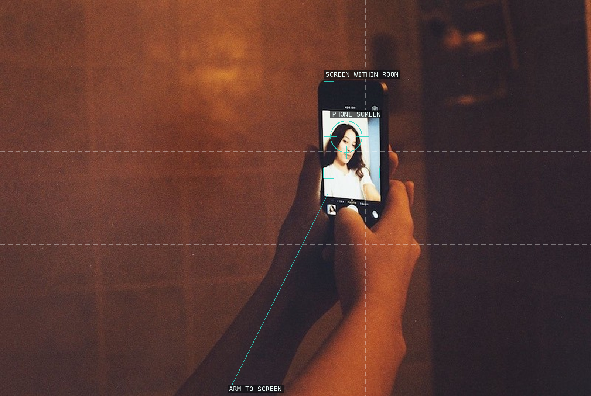
01 A hand relays attention to a small lit screen.
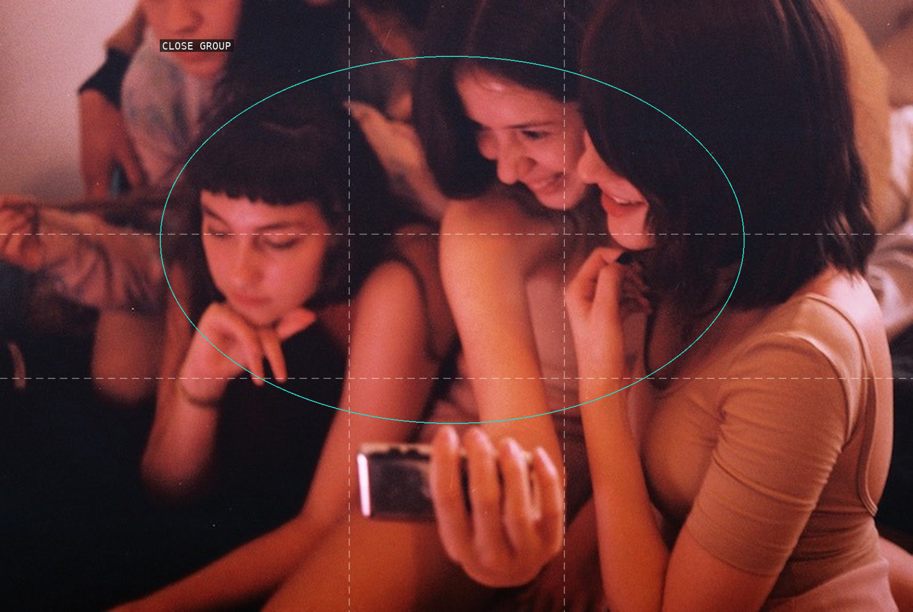
02 Close faces and hands form an inward social knot.
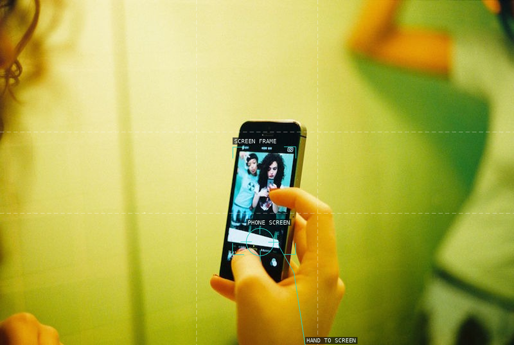
03 A black phone rectangle interrupts a bright wall.
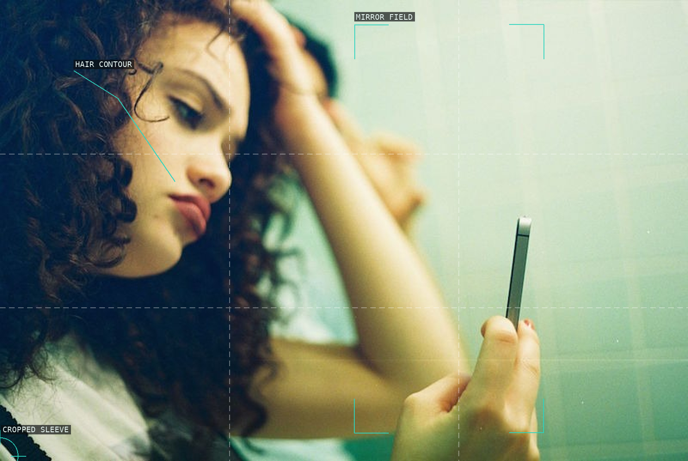
04 Cropped figure and hair contour hold a pale tiled field in tension.
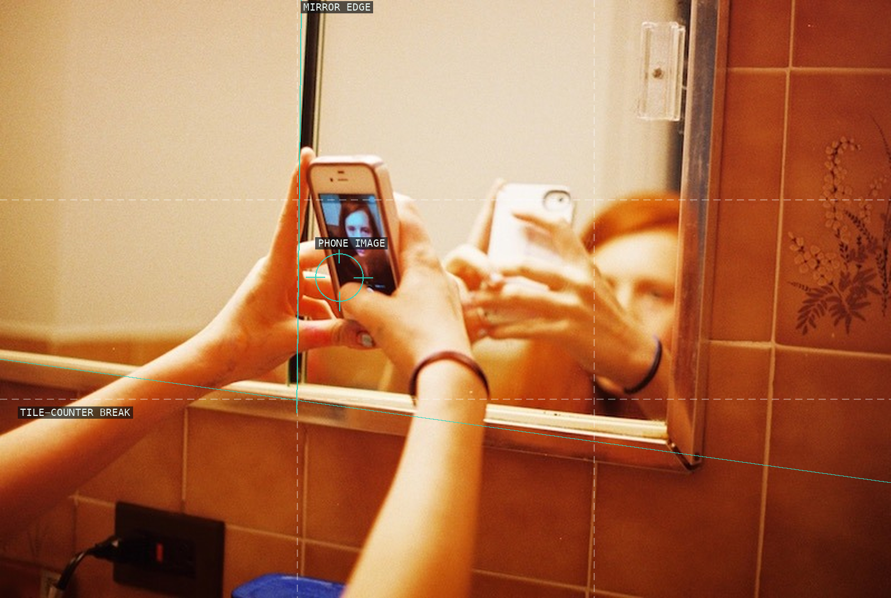
05 Mirror, hands, and device make looking recursive.
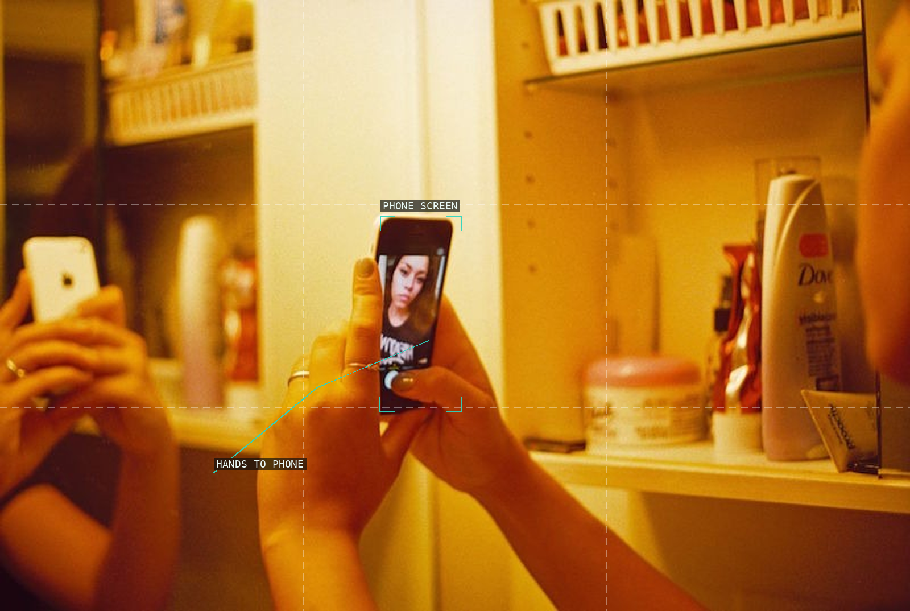
06 Warm tiles enclose nested reflective surfaces.
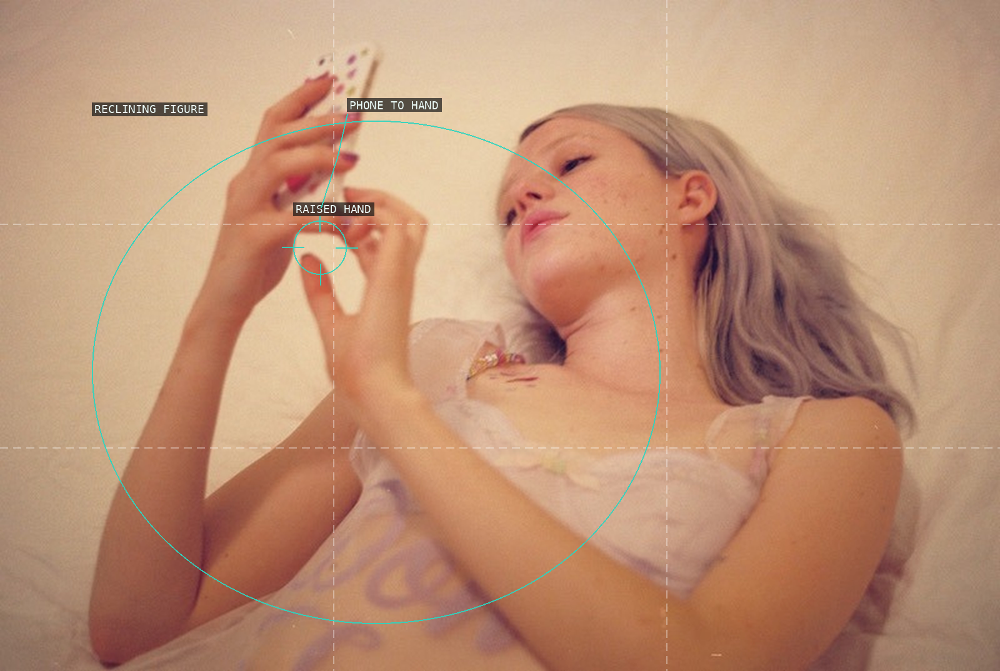
07 Raised hands lead into a softly cropped body.
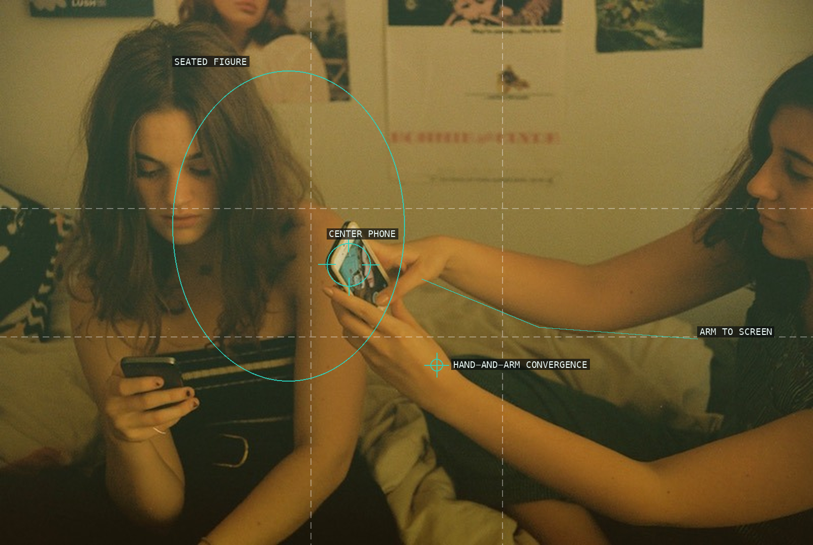
08 Two devices are joined by an arm across the room.
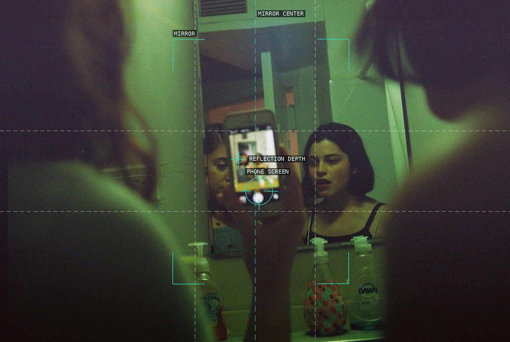
09 A mirror centers phone, room, and reflected figure.
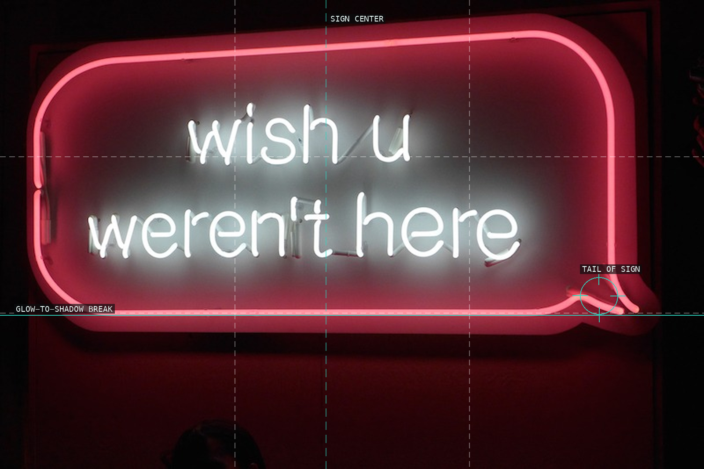
10 A rounded neon border concentrates language.
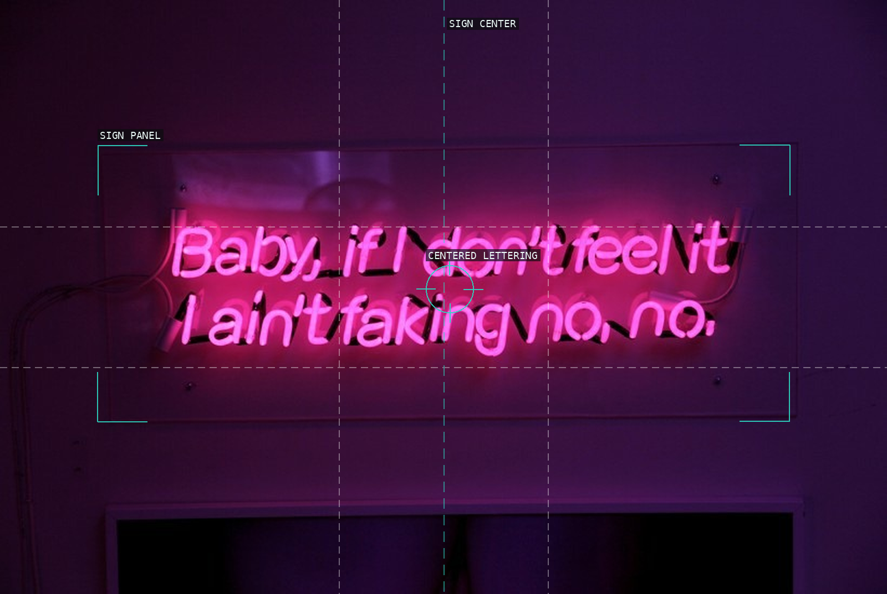
11 Magenta lettering is held in a rectangular sign panel.
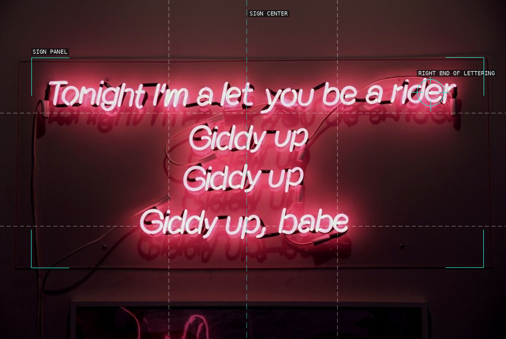
12 A lyric block makes the wall a shallow stage.